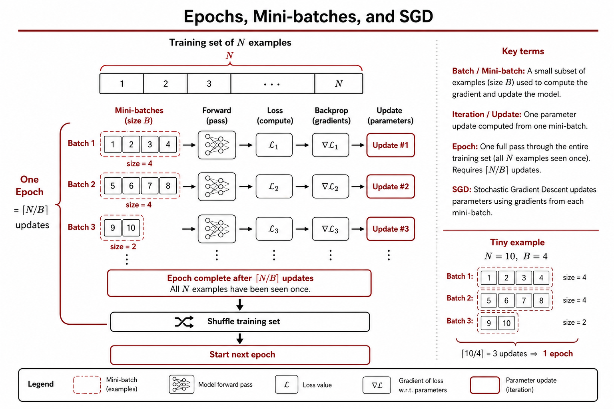
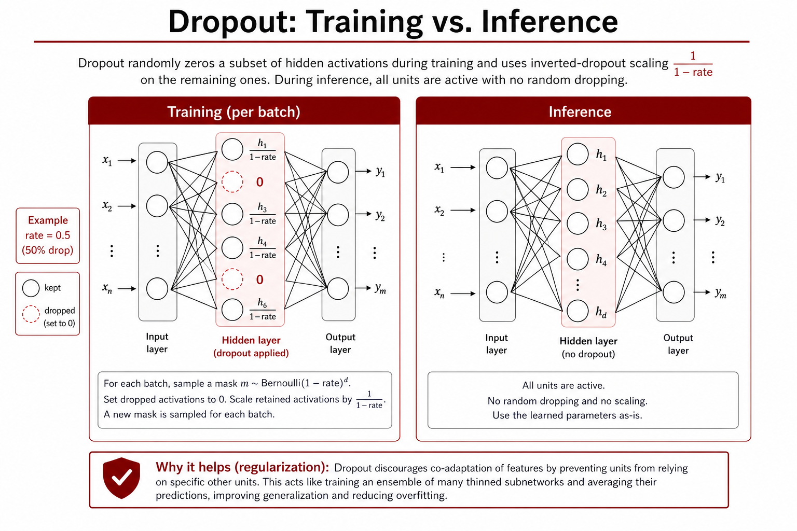
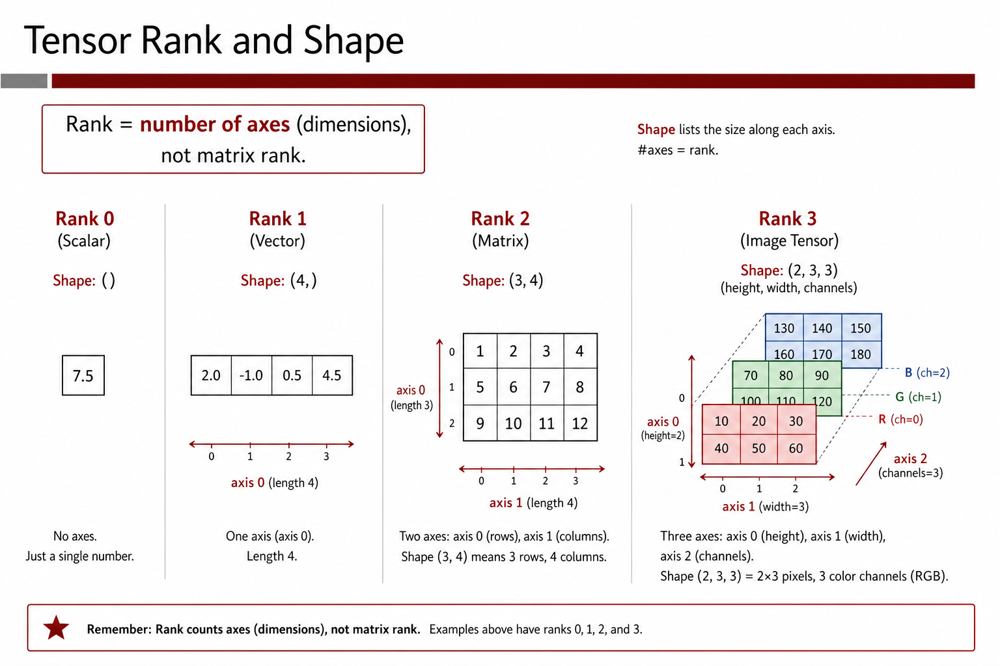
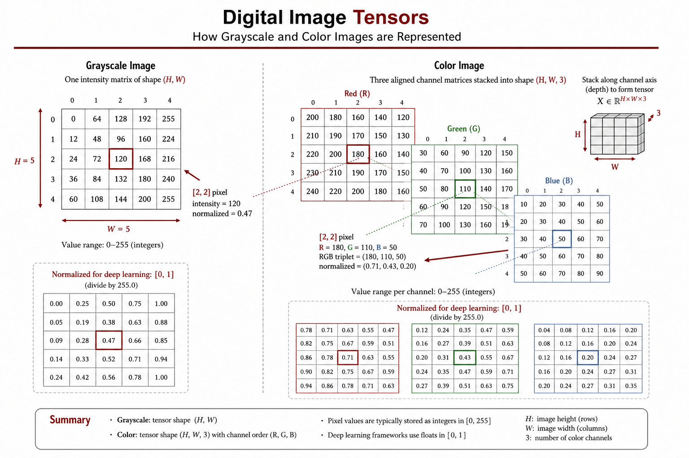
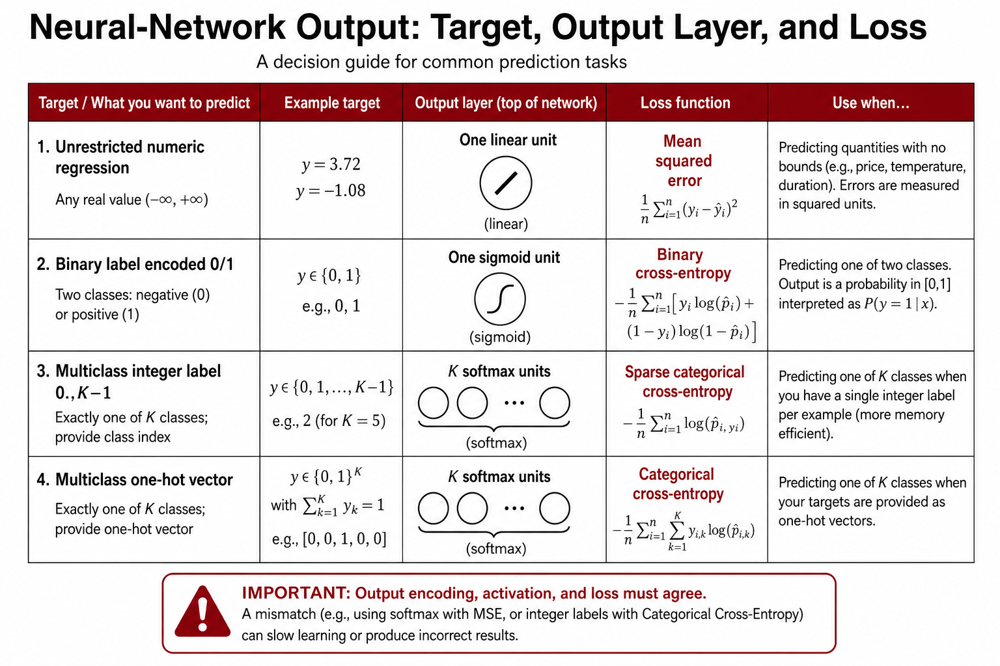
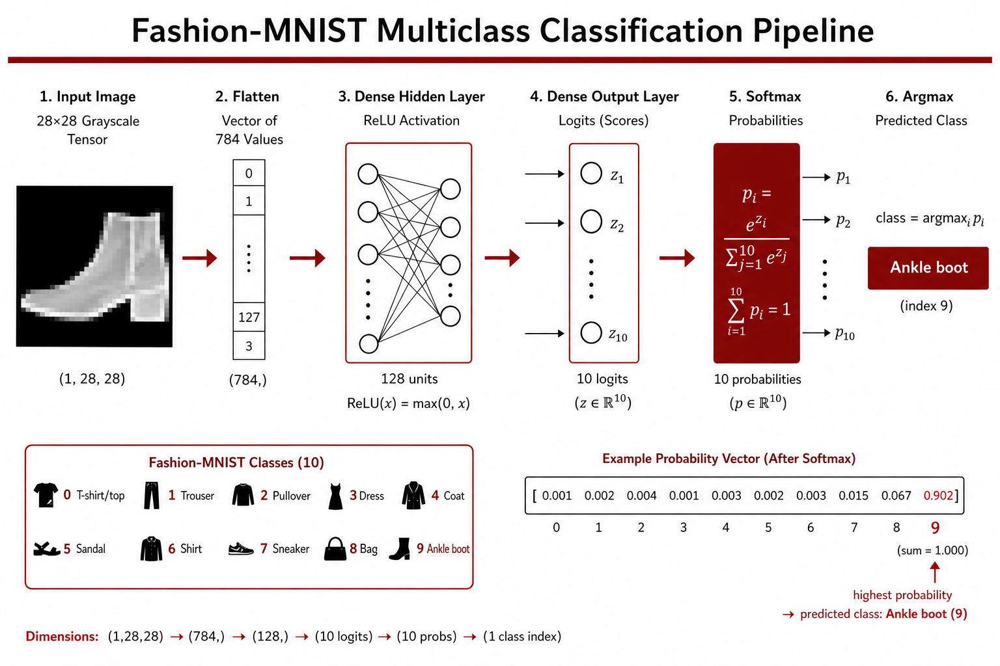

Chapter 3: The Keras/TensorFlow Workflow — From Tabular Data to Image Classification
Lecture video: https://www.youtube.com/watch?v=8QuyDcMIdRc Slides: Lecture 3A — Lightning Introduction to Keras/TF · Lecture 3B — Deep Learning for Computer Vision: The Basics Companion Colabs: Predicting Heart Disease (tabular binary classification) · Fashion MNIST from Scratch (image classification)
In the previous chapters we assembled the conceptual machinery of deep learning: neurons, layers, loss functions, and gradient descent. This chapter is where the course becomes truly hands-on. We will train our first two real models in Keras — a binary classifier that predicts heart disease from tabular patient data, and a ten-way image classifier for the Fashion MNIST clothing dataset. Along the way we make precise several ideas that were only sketched before: what exactly an epoch and a batch are, how overfitting shows up during training and how to guard against it, what a tensor is, and what TensorFlow and Keras actually do for you.
Learning objectives
After working through this chapter and its two companion Colabs, you should be able to:
- Explain the difference between gradient descent and stochastic gradient descent, and compute the number of batches per epoch for a given training-set size and batch size.
- Recognize overfitting and underfitting from training/validation loss and accuracy curves, and apply early stopping as a regularization strategy.
- Define a tensor, state its rank, and give real-world examples of tensors of rank 0 through 5.
- Describe what TensorFlow provides (automatic gradients, optimizers, parallel/distributed execution) and what conveniences Keras adds on top.
- Build a neural network with the Keras functional API, and use
model.compile,model.fit, andmodel.evaluateto train and assess it. - Preprocess tabular data for a neural network: one-hot encode categorical variables, standardize numeric variables, and split data into train/validation/test sets in the right order.
- Explain how grayscale and color images are represented digitally, and name the key computer-vision task types (classification, localization, detection, segmentation).
- Choose the correct output layer (sigmoid vs. softmax) and the matching cross-entropy loss (
binary_crossentropy,sparse_categorical_crossentropy,categorical_crossentropy) for a given prediction problem.
3.1 Recap: how a deep learning model is trained
Training a neural network is, at its heart, no different from training any other statistical model. The network has a collection of parameters — weights and biases — and we must use data to find good values for them. "Good" means that we define some measure of discrepancy between what the model predicts and what the ground truth says, and we search for weights that minimize that discrepancy. The discrepancy measure is the loss function.
The overall training flow is a loop:
- Feed inputs through the network's layers to produce predictions.
- Compare the predictions $\hat{y}$ against the true targets $y$ using the loss function to obtain a loss score.
- Hand the loss score to the optimizer, which computes the gradient of the loss with respect to every parameter.
- Update every weight a small step in the direction that decreases the loss:
$$w \leftarrow w - \alpha \, \frac{d\,Loss(w)}{dw}$$
where $\alpha$ is the learning rate. Then repeat.
We also saw two flavors of this loop. In plain gradient descent (GD), every data point is used at each iteration to compute the gradient. In stochastic gradient descent (SGD), we instead randomly choose a small subset of the data points, pretend for a moment that those are the only points we have, compute predictions, loss, and gradient from just that subset, update the weights, and move on. SGD is both cheaper computationally and tends to find better solutions — a rare case where you get to have your cake and eat it too.
3.2 Epochs and batches

Because SGD only looks at a few points at a time, we need some careful bookkeeping vocabulary before we start training in Keras.
An epoch is one full pass through the training set. But an epoch plays out very differently under GD and SGD:
- Gradient descent: every training sample flows through the network; we compute predictions for all of them, calculate the gradient of the loss once, and update the parameters once per epoch.
- Stochastic gradient descent: we divide the training data into minibatches — which, following convention (and to save breath), we will simply call batches from now on. For each batch we run its samples through the network, compute the gradient, and update the weights. By the time we get to batch 2, the weights have already changed from processing batch 1.
💬 From the lecture: "Within that epoch, we update the weights many times. Basically, we update the weights as many times as we have batches."
So how many batches are in one epoch?
$$#\text{batches per epoch} = \left\lceil \frac{\text{training set size}}{\text{batch size}} \right\rceil$$
For the neural heart-disease model we will train shortly, the effective training set has 194 patients and we choose a batch size of 32, so:
$$\lceil 194 / 32 \rceil = 7$$
The first six batches have 32 samples each and the seventh batch has the last 2 samples — and that's fine; nothing says every batch must be the same size. Batch sizes like 32, 64, and 128 are conventional because they align well with the parallel hardware (GPUs) we run on. As Ramakrishnan notes in lecture, Keras handles all of this bookkeeping automatically — but you should know the details anyway: "If you don't know the details... you will not actually be able to think new and creative thoughts for a new problem, because the concepts are not manipulable in your head yet."
Two practical clarifications that came up repeatedly in class:
- A batch consists of rows (data points — patients, images), not variables. Each batch is run through the entire network, because you cannot compute a prediction, and hence a loss, and hence a gradient, without going through every layer.
- The advantage of batching is that after batch 1's update, batch 2 is processed with slightly better weights. Rather than waiting for a full pass to make one update, we improve as we go.
3.3 Overfitting and regularization

Recall from your machine-learning background what happens as a model becomes more complex: error on the training data steadily decreases, but error on held-out validation data decreases, bottoms out, and then starts climbing again. The climbing region is overfitting — the model is memorizing idiosyncrasies of the training data rather than learning generalizable patterns. The left side of the curve is underfitting — the model cannot yet capture the richness of the data. We are hunting for the sweet spot in between.
This matters enormously for neural networks. To learn smart representations of complex, unstructured data, the network needs large capacity — many layers, many neurons per layer (GPT-3, for example, has 96 layers). But more layers means more parameters, more complexity, and more risk of overfitting. So regularization is not optional; it is part of the standard workflow. The course uses two regularization strategies:
Early stopping. Split off a validation set from the training data, keep training, and monitor the validation loss. Training loss will keep falling, but at some point validation loss flattens out and begins to rise — and that is where you stop. Geoffrey Hinton, one of the "godfathers" of deep learning, famously called early stopping a "beautiful free lunch." Crucially, the validation set is never used to compute gradients — it is used only to evaluate loss and accuracy at the end of each epoch. That is what keeps you honest.
Dropout. Randomly zero out the outputs of some fraction (typically 50%) of the nodes in a hidden layer during training, implemented in Keras as a "dropout layer." We will meet dropout properly in Chapter 4, the first time we actually use it.
Putting it all together, here is the checklist for creating and training a deep neural network from scratch:
- Get the data ready.
- Design ("lay out") the network — number of hidden layers, neurons per layer, and the right output layer for the type of output.
- Pick a loss function matched to the output type, and an optimizer from the many SGD flavors (we default to Adam, just as we default to ReLU for hidden activations — both are empirically excellent).
- Decide on a regularization strategy (early stopping and/or dropout).
- Set it all up in Keras/TensorFlow and start training.
3.4 What's a tensor?

Before firing up TensorFlow, we should know what a tensor is. A tensor is a generalization of numbers, vectors, and matrices to arbitrarily many dimensions. Every tensor has a rank — the number of axes it has:
| Rank | Name | Example |
|---|---|---|
| 0 | Scalar | 42 |
| 1 | Vector | (42, 23.4, 11.2) |
| 2 | Matrix (table) | a grayscale image |
| 3 | "Cube" | a color image (three stacked tables: R, G, B) |
| 4 | — | a color video (a stream of color images) |
| 5 | — | a list of videos |
The last two rows illustrate the most important mental model: a tensor of rank $n$ is just a list of rank $n{-}1$ tensors. A video is a list of color images (rank 3 + 1 = 4); a list of videos is rank 5. Whenever you see a tensor of any complexity, you can iterate through its first axis and get back a collection of one-rank-lower tensors. As Ramakrishnan admits, the concept — which traces back to Einstein — is "simultaneously kind of easy to understand and also slippery," so read Chapter 2.2 of the Chollet textbook and practice until it becomes second nature.
3.5 TensorFlow and Keras
Neural networks are literally tensors flowing from input to output — hence the name TensorFlow. TensorFlow (TF) is a library that provides four things that would be painful to build yourself:
- Automatic gradient calculation of arbitrarily complicated loss functions, $\nabla Loss(w)$ — no hand-derived chain rule required. This is the single best part.
- A library of state-of-the-art optimizers, including SGD and all its variants (Adam among them).
- Automatic distribution of computational load across servers — parallelizing computation is a genuinely hard CS problem, and TF solves it for you.
- Automatic adaptation of your code to parallel hardware — GPUs, and Google's own TPUs ("Tensor Processing Units").
Keras sits on top of TensorFlow and supplies the convenience layer: pre-defined layers (we've already seen Dense), flexible ways to specify architectures, easy data preprocessing, easy training with metric reporting, and a library of pre-trained models you can download and customize. (The course uses TensorFlow/Keras rather than PyTorch deliberately: PyTorch is a fantastic framework but demands more object-oriented programming background, and Keras is just as powerful for our purposes while being easier to get going with.)
There are three broad ways to build models in Keras — the Sequential API, the Functional API, and subclassing. This course uses the Functional API almost exclusively; Ramakrishnan describes it as "a beautifully designed LEGO-block environment" in which very complicated models can be composed easily. Section 7.2.2 of the textbook covers it in detail. Here is our heart-disease network from Chapter 2, expressed in the functional API — the whole model in four lines:
input = keras.Input(shape=29)
h = keras.layers.Dense(16, activation="relu")(input)
output = keras.layers.Dense(1, activation="sigmoid")(h)
model = keras.Model(input, output)
Notice the pattern that defines the functional API: each layer is a callable that you apply to the output of the previous layer, and at the end you tell Keras which (input, output) pair constitutes your model.
Filling in the training checklist for this model: one hidden layer with 16 ReLU neurons; a sigmoid output (binary classification); binary cross-entropy loss (we're predicting a probability to be compared against a 0/1 label); the Adam optimizer; and early stopping for regularization. Let's train it.
3.6 Hands-on: predicting heart disease from tabular data
The dataset (UCI Heart Disease) has 303 patients, one per row, with 13 features — demographics like age and sex, plus biomarkers such as resting blood pressure (trestbps), cholesterol (chol), maximum heart rate (thalach), and so on — and a binary target column: heart disease, yes or no.
3.6.1 Technical preliminaries
Every notebook in this course begins the same way — importing TensorFlow, Keras, and the three workhorse Python packages:
import tensorflow as tf
from tensorflow import keras
import numpy as np
import pandas as pd
import matplotlib.pyplot as plt
NumPy for manipulating arrays and tensors, Pandas for wrangling raw data into a shape Keras can consume, and Matplotlib for plotting the loss and accuracy curves that tell us whether early stopping is needed.
Randomness enters deep learning training in several places: the random initialization of the weights, the shuffling of data into batches for SGD, the random train/validation/test split, and (later) dropout. To make results reproducible for anyone re-running the notebook, we set a single seed for all of these random number generators:
keras.utils.set_random_seed(42)
(42, of course, being the answer to life, the universe, and everything — a Hitchhiker's Guide to the Galaxy reference the course returns to often.) A caveat from lecture: even with a fixed seed, bitwise reproducibility is not guaranteed across hardware and device drivers — hence the notebook's fingers-crossed 🤞.
3.6.2 Reading and inspecting the data
François Chollet has made the dataset available as a CSV, which loads into a Pandas dataframe in one line:
df = pd.read_csv("http://storage.googleapis.com/download.tensorflow.org/data/heart.csv")
df.shape # (303, 14)
The first thing to check in any binary classification problem is class balance:
df.target.value_counts(normalize=True, dropna=False)
# 0 0.726073
# 1 0.273927
72.6% of patients do not have heart disease. This immediately gives us a baseline model: predict 0 (no disease) for everyone, and you will be right 72.6% of the time. As Ramakrishnan puts it, any fancy model we build has got to beat this — "otherwise, it's not worth its weight in layers."
3.6.3 Preprocessing: one-hot encoding and standardization
The data mixes categorical and numeric variables, so we group them:
categorical_variables = ['sex', 'cp', 'fbs', 'restecg', 'exang', 'ca', 'thal']
numerics = ['age', 'trestbps', 'chol', 'thalach', 'oldpeak', 'slope']
Unlike, say, a decision tree, a neural network cannot handle categorical inputs directly — everything must be numeric. The standard fix is one-hot encoding, which Pandas does in one line:
df = pd.get_dummies(df, columns=categorical_variables)
The thal column, for instance, had three values (fixed, normal, reversible); after encoding it becomes three 0/1 columns: thal_fixed, thal_normal, thal_reversible.
Neural networks also work best when numeric inputs are all in a relatively small, similar range, so we standardize the numeric variables — subtract the mean, divide by the standard deviation. But before standardizing, we must split off the test set:
test_df = df.sample(frac=0.2, random_state=42)
train_df = df.drop(test_df.index)
# train_df.shape -> (242, 30); test_df.shape -> (61, 30)
Why split before normalizing? Because if the means and standard deviations were computed on the full dataset, information about the test set would leak into the modeling process — and the test set wouldn't really be locked away anymore. The test set's job is to give an honest, one-time estimate of how the final model will perform in the wild, so it must not influence anything, including preprocessing statistics. Accordingly, we compute the statistics from the training set only and apply them to both:
means = train_df[numerics].mean()
sd = train_df[numerics].std()
train_df[numerics] = (train_df[numerics] - means) / sd
test_df[numerics] = (test_df[numerics] - means) / sd
Finally, Keras is happiest receiving NumPy arrays, and it needs $X$ and $y$ separated. The target column is column #6 (counting from 0), so np.delete carves out the features and slicing extracts the label:
train = train_df.to_numpy()
test = test_df.to_numpy()
train_X = np.delete(train, 6, axis=1) # (242, 29)
test_X = np.delete(test, 6, axis=1) # (61, 29)
train_y = train[:, 6] # (242,)
test_y = test[:, 6] # (61,)
The 29 features here are exactly the 29 input nodes in the network we designed — that's where the shape=29 comes from.
3.6.4 Define the model
Everything so far, in Ramakrishnan's words, has been "boring preprocessing." Now the action:
num_columns = train_X.shape[1]
# define the input layer
input = keras.Input(shape=num_columns)
# feed the input vector to the hidden layer
h = keras.layers.Dense(16, activation="relu", name="Hidden")(input)
# feed the output of the hidden layer to the output layer
output = keras.layers.Dense(1, activation="sigmoid", name="Output")(h)
# tell Keras that this (input, output) pair is your model
model = keras.Model(input, output)
The name= arguments are purely cosmetic — they just make the model summary easier to read. Speaking of which, always run model.summary() immediately after building: it lists each layer, the shape of the tensors flowing in and out, and the parameter count — here, 497 parameters. And as the course insists for your first few models, hand-verify that number:
(29 + 1) * 16 + (16 + 1) * 1 # 497
That's 29 inputs × 16 hidden neurons plus 16 biases, then 16 × 1 output weight plus 1 bias. You can also render the network graphically with keras.utils.plot_model(model, show_shapes=True) — handy once networks get large.
3.6.5 Compile: loss, optimizer, metrics
model.compile tells Keras three things: which loss function, which optimizer, and which metrics to report.
model.compile(optimizer="adam",
loss="binary_crossentropy",
metrics=["accuracy"])
- Loss:
binary_crossentropy, because the output is a single probability compared against a 0/1 label. - Optimizer: Adam, the empirically excellent "set-and-forget" default flavor of SGD.
- Metrics: accuracy. Important nuance from lecture: metrics are reported only — they play no role in optimization. You can ask Keras for error rates, F1, or anything from its long list of metrics, with no mathematical consequence for training.
The compile step is not mere ceremony: Keras takes the model you defined and reorganizes it so the computation becomes amenable to parallelization and distribution across hardware.
3.6.6 Fit: training the model
Three final decisions: the batch size (32 is the standard starting default — or, as researchers half-joke, "the biggest batch size that doesn't make your machine die"), the number of epochs (20–30 is a good starting point; since this dataset is tiny we'll run 300 just to watch overfitting happen), and whether to hold out a validation set (yes — 20% of the training data, for overfitting detection and early stopping).
history = model.fit(train_X, # the array with the input X columns
train_y, # the array with the output y column
epochs=300, # number of epochs to run
batch_size=32, # number of samples per batch
verbose=1, # verbosity during training
validation_split=0.2) # use 20% of the data for validation
validation_split=0.2 takes 20% of the training data out once, at the very beginning, and sets it aside; the remaining 194 samples get divided into the 7 batches we computed in Section 3.2. At the end of every epoch, Keras evaluates loss and accuracy on that same fixed validation set. Reading one line of the training log: 7/7 means 7 batches were processed this epoch; loss and accuracy are computed on the training data; val_loss and val_accuracy are computed on the held-out validation set.
Keep the distinction between the three datasets straight — it came up several times in class discussion. The validation set is used during modeling: to detect overfitting, to decide when to stop, and later to choose among hyperparameter settings. The test set is opened from the safe exactly once, at the very end, with your final-final model — not to improve the model but to get a realistic estimate of deployed performance.
3.6.7 Diagnose with loss and accuracy curves
Staring at 300 epochs' worth of numbers is painful, so we plot. The history object returned by model.fit contains a dictionary, history.history, with keys ['loss', 'accuracy', 'val_loss', 'val_accuracy']:
history_dict = history.history
loss_values = history_dict["loss"]
val_loss_values = history_dict["val_loss"]
epochs = range(1, len(loss_values) + 1)
plt.plot(epochs, loss_values, "bo", label="Training loss")
plt.plot(epochs, val_loss_values, "b", label="Validation loss")
plt.title("Training and validation loss")
plt.xlabel("Epochs")
plt.ylabel("Loss")
plt.legend()
plt.show()
The training loss falls steadily; the validation loss falls, flattens around epoch 50, and then gently rises — some overfitting. A purist response would be to re-initialize and retrain for only ~50 epochs (manual early stopping). But the analogous accuracy plot complicates the story: validation accuracy flattens and then, strangely, climbs a bit at the very end.
Why can accuracy improve while loss worsens? Because they are related but not the same thing. Accuracy is discrete and jumpy: if a patient's predicted probability moves from 0.49 to 0.51, the cross-entropy loss changes only slightly, but the accuracy for that patient jumps from 0 to 1.
💬 From the lecture: "Binary cross-entropy is a beautiful proxy, but an imperfect proxy for the thing we actually care about in the real world, which is error rate and accuracy. That's why I tend to want both — and if accuracy is telling me one thing, I kind of tend to believe that."
A workflow tip from class: if at the end of your chosen epochs the validation loss is still dropping, you can call model.fit again and Keras continues where it left off — run 10 more epochs, check, run 10 more, back off when validation performance turns. And all this manual monitoring can be automated with Keras callbacks, which can stop training when validation loss stops improving or save the best model as you go — covered later in the course.
3.6.8 Evaluate on the test set
Finally, the moment of truth — evaluate once on the untouched test set:
model.evaluate(test_X, test_y)
# 2/2 [====] - loss: 0.3866 - accuracy: 0.8361
83.6% accuracy, versus the 72.6% baseline. The little neural network earns its keep.
One shortcoming to note: we did the one-hot encoding and normalization outside the model, which means anyone deploying this model must remember and carry along the preprocessing details (e.g., each variable's mean and standard deviation). The elegant fix is Keras preprocessing layers, which fold the preprocessing into the model itself; we'll use that idea (via a Rescaling layer) in Chapter 4.
3.7 Computer vision: representing images digitally

The second half of the lecture pivots to images. A grayscale image is a rectangular array of pixels, each holding a light intensity between 0 (black) and 255 (blinding white); the image is literally a table — a rank-2 tensor — of these numbers. In the classic MNIST "5" example from fast.ai, the black background is all zeros, the pen strokes are large numbers, and if you step back and squint at the number grid you can actually see the 5. (What do the units mean? Think of it as a normalized relative scale from 0 to 255 that the digitization process maps light levels onto.)
A color image represents each pixel with three intensities — its "redness," "greenness," and "blueness" (RGB) — each still 0–255. So a color image is three tables of numbers, one per color channel (the standard deep-learning lingo): a rank-3 tensor.
Key tasks in computer vision
- Image classification: given an image and a list of possible categories, decide which category the image contains (the canonical dog-vs-cat problem).
- Classification and localization: also output where the object is, as bounding-box coordinates (top-left and bottom-right corners).
- Object detection: find and localize every object in a scene — this is what a self-driving car's vision system does many times a second: pedestrian box, zebra-crossing box, stroller box.
- Semantic segmentation: classify every pixel into one of N categories — these pixels are road, these are sheep, these are grass.
- Instance segmentation: classify every pixel and distinguish instances — sheep 1 versus sheep 2 versus sheep 3.
This chapter (and the next) focuses on classification, the foundational task.
3.8 Multi-class classification: flattening, softmax, and cross-entropy

Our motivating application is Fashion MNIST: 70,000 grayscale images of clothing items across 10 categories (T-shirts, trousers, boots, ...). The dataset is perfectly balanced — 10% per class — so the naive baseline model achieves only 10% accuracy. We will beat that handily with a simple network built from scratch.
Two new design problems arise.
Problem 1: the input is a table, not a vector. Each image is a 28×28 matrix (rank-2 tensor), but so far our networks consume vectors. The fix is flattening: take each of the 28 rows, rotate it, and string the rows end-to-end into one long vector of $28 \times 28 = 784$ numbers. Nothing clever has happened — we've merely reorganized the same numbers — but now we are back in familiar territory and can feed the vector to a dense hidden layer (256 ReLU neurons works well here).
Problem 2: the output is 10-way, not binary. We know how to output 10 arbitrary numbers (10 linear-activation units) and we know how to output 10 independent probabilities (10 sigmoids). But 10 sigmoids won't do here — the probabilities wouldn't sum to 1, and exactly one category is the right answer. We need 10 probabilities that sum to 1. Enter the softmax layer: take the 10 numbers $a_1, \dots, a_{10}$ emerging from the final linear layer, exponentiate each, and divide by the total:
$$\text{softmax}(a_i) = \frac{e^{a_i}}{\sum_{j=1}^{n} e^{a_j}}$$
Exponentiation makes every value positive, and dividing by the sum forces the results to add to exactly 1 — a valid probability distribution, guaranteed.
💬 From the lecture: "Pay attention to this, because this is actually how GPT-4 works. Every word it's emitting — it's doing a 52,000-way softmax. Think of it as every word in the language is a possible output, and it just picks the most probable word and emits that."
The full output-layer/loss-function pairing table, which you should internalize:
| Output variable | Output layer | Loss function |
|---|---|---|
| Single number (regression) | Single linear unit | Mean squared error |
| Single probability (binary classification) | Sigmoid | Binary cross-entropy |
| Vector of $n$ numbers (multi-output regression) | Stack of linear units | Mean squared error |
| Vector of $n$ probabilities summing to 1 (multi-class) | Softmax | Categorical cross-entropy |
One last wrinkle: for multi-class problems, Keras offers two cross-entropy losses, and you must pick the one matching how your labels are encoded:
- Labels as integers
0..9(the sparse encoding) →sparse_categorical_crossentropy - Labels one-hot encoded (a length-10 vector with a single 1) →
categorical_crossentropy - Binary 0/1 labels →
binary_crossentropy
These are mathematically equivalent formulations; the choice depends purely on how the data arrives in your notebook. Fashion MNIST's labels come as integers, so we use sparse_categorical_crossentropy.
3.9 Hands-on: Fashion MNIST from scratch

The Fashion MNIST data ships with Keras (one of its standard datasets), pre-split into train and test sets — deliberately, so that everyone benchmarking on this dataset evaluates against the same test set:
(x_train, y_train), (x_test, y_test) = keras.datasets.fashion_mnist.load_data()
print(x_train.shape, y_train.shape) # (60000, 28, 28) (60000,)
print(x_test.shape, y_test.shape) # (10000, 28, 28) (10000,)
The training input is a rank-3 tensor — which, per Section 3.4, you should read as a list of 60,000 rank-2 tensors, each a 28×28 table of pixel intensities. The labels are integers 0–9; a small lookup list makes them human-readable:
labels = ["T-shirt/top", "Trouser", "Pullover", "Dress", "Coat",
"Sandal", "Shirt", "Sneaker", "Bag", "Ankle boot"]
labels[y_train[0]] # 'Ankle boot'
Data prep. The tip from the notebook: NNs learn best when each input is in a small range. Since pixels are guaranteed to lie in 0–255, we can skip mean/sd standardization and simply divide by the max:
x_train = x_train / 255.0
x_test = x_test / 255.0
Model. Translating the design of Section 3.8 into the functional API:
# define the input layer
input = keras.Input(shape=(28, 28))
# convert the 28 x 28 matrix of numbers into a loooooooong vector
h = keras.layers.Flatten()(input)
# feed the long vector to the hidden layer
h = keras.layers.Dense(256, activation="relu", name="Hidden")(h)
# feed the output of the hidden layer to the output layer
output = keras.layers.Dense(10, activation="softmax", name="Output")(h)
model = keras.Model(input, output)
Note the new Flatten layer — it has no parameters; it just reshapes. Hand-verifying the parameter count reported by model.summary():
(784 * 256 + 256) + (256 * 10 + 10) # 203530
Compile and fit. Sparse labels → sparse categorical cross-entropy; Adam as always; accuracy as the reported metric:
model.compile(loss="sparse_categorical_crossentropy",
optimizer="adam",
metrics=["accuracy"])
batch_size = 64
epochs = 20
history = model.fit(x_train,
y_train,
batch_size=batch_size,
epochs=epochs,
validation_split=0.2)
The notebook wraps the loss- and accuracy-curve plotting code from the heart-disease Colab into reusable functions plot_loss_curves(history) and plot_acc_curves(history), and asks the same diagnostic questions: is validation loss rising while training loss falls? Would early stopping at epoch N help?
Evaluate.
model.evaluate(x_test, y_test)
# 313/313 [====] - loss: 0.3604 - accuracy: 0.8845
88.5% accuracy on the test set, from a model that has no idea it is looking at images — it just consumed 784 numbers per example. Against the 10% naive baseline, that's impressive. And extending the network is trivially easy in the functional API: adding a second 256-neuron hidden layer is literally one more line (h = keras.layers.Dense(256, activation="relu", name="Hidden_2")(h)) sandwiched between the first hidden layer and the output.
Can we do even better by telling the network that its input is an image — exploiting the spatial structure we destroyed when we flattened? That is exactly the subject of Chapter 4: convolutional neural networks.
Hands-On Lab
Two Colab notebooks accompany this chapter. For each: make your own copy first (File → Save a copy in Drive), and for vision/NLP notebooks request a GPU runtime (Runtime → Change runtime type). The instructor's advice: don't cut-and-paste — retype the code; you will learn far more.
Lab 3A — Predicting Heart Disease (tabular binary classification)
The full CSV-to-trained-model workflow:
- Setup: import
tensorflow,keras,numpy,pandas,matplotlib; callkeras.utils.set_random_seed(42)for reproducibility. - Load & explore:
pd.read_csv(...)→ 303×14 dataframe; check class balance withdf.target.value_counts(normalize=True)→ 72.6%/27.4%, establishing the 72.6% predict-all-zeros baseline. - Preprocess: one-hot encode 7 categorical variables with
pd.get_dummies; split 80/20 into train/test before standardizing; standardize numerics using training-set means/sds; convert to NumPy with.to_numpy(); separate features (np.delete(train, 6, axis=1)) from the target column. - Build: functional-API model —
Input(shape=29)→Dense(16, relu)→Dense(1, sigmoid); verify 497 parameters viamodel.summary()and by hand; visualize withplot_model. - Compile:
optimizer="adam",loss="binary_crossentropy",metrics=["accuracy"]. - Train:
model.fit(..., epochs=300, batch_size=32, validation_split=0.2), storing the result inhistory. - Diagnose: plot training vs. validation loss and accuracy from
history.history; identify the overfitting point (~epoch 50) and discuss early stopping. - Evaluate:
model.evaluate(test_X, test_y)→ 83.6% test accuracy vs. 72.6% baseline. Closing pointer: Keras preprocessing layers let you fold the encoding/normalization into the model itself for cleaner deployment.
Lab 3B — Fashion MNIST from Scratch (multi-class image classification)
- Load:
keras.datasets.fashion_mnist.load_data()→ 60,000 training + 10,000 test images, each 28×28; labels are integers 0–9, decoded via alabelslist. - Explore: print the raw pixel matrix of the first image (an ankle boot); render the first 25 images with Matplotlib's
imshow. - Data prep: normalize pixels to [0, 1] by dividing by 255.
- Build:
Input((28,28))→Flatten→Dense(256, relu)→Dense(10, softmax); verify 203,530 parameters by hand. - Compile & train:
sparse_categorical_crossentropy+ Adam;fitwithbatch_size=64,epochs=20,validation_split=0.2; plot loss/accuracy curves with the reusable helper functions. - Evaluate:
model.evaluate(x_test, y_test)→ 88.5% test accuracy vs. 10% baseline. - Extend (exercise): add a second hidden layer (one extra line), then compile/fit/evaluate the deeper model yourself.
Key Takeaways
- An epoch is one full pass through the training data. Under SGD, each epoch contains $\lceil \text{training size} / \text{batch size} \rceil$ batches, and the weights are updated once per batch — not once per epoch.
- Big networks overfit; regularization is a standard part of the workflow. Early stopping — monitoring validation loss and halting when it turns upward — is a "beautiful free lunch." The validation set is never used for gradient computation, only evaluation.
- A tensor is the generalization of scalar → vector → matrix to any rank; a rank-$n$ tensor is a list of rank-$(n{-}1)$ tensors. Grayscale image = rank 2, color image = rank 3, video = rank 4.
- TensorFlow gives you automatic gradients, optimizers, and automatic parallel/distributed execution; Keras adds layers, preprocessing, training conveniences, and pre-trained models on top. The functional API — layers as callables chained from
Inputto output — is the course's tool of choice. - The core Keras workflow is always: prepare data → define model →
model.compile(optimizer, loss, metrics)→model.fit(...)→ plot curves fromhistory→model.evaluate(test). - For tabular data: one-hot encode categoricals, standardize numerics, and split train/test before computing normalization statistics to avoid leakage. Always compare against a naive baseline (majority class: 72.6% for heart disease, 10% for Fashion MNIST).
- Match the output layer and loss to the problem: sigmoid +
binary_crossentropyfor binary; softmax +sparse_categorical_crossentropy(integer labels) orcategorical_crossentropy(one-hot labels) for multi-class. Softmax converts $n$ arbitrary numbers into $n$ probabilities that sum to 1 via $e^{a_i} / \sum_j e^{a_j}$. - Loss is a mathematically convenient proxy; accuracy (or the metric closest to real-world deployment) is what you actually care about — plot and judge both.
Check Your Understanding
1. A training set has 1,000 samples and you train with a batch size of 64. How many batches are there per epoch, and how many weight updates occur in 5 epochs of SGD?
Answer
Batches per epoch = ⌈1000/64⌉ = **16** (15 full batches of 64 plus one final batch of 40). SGD updates the weights once per batch, so 5 epochs produce 16 × 5 = **80 weight updates**. (Plain gradient descent, by contrast, would make only 5 updates — one per epoch.)2. Why must you split off the test set before standardizing the numeric variables?
Answer
Standardization is part of the modeling process. If the means and standard deviations are computed on the full dataset, information from the test set leaks into training, and the test set is no longer truly held out. The correct procedure: split first, compute means/sds on the training set only, then apply those *training* statistics to both the training and test sets. This preserves the test set's role as a one-time, honest estimate of deployed performance.3. What is the rank of the tensor representing (a) a grayscale image, (b) a color image, (c) a color video, (d) a batch of color videos?
Answer
(a) Rank 2 (a table of pixel intensities). (b) Rank 3 (three tables — R, G, B channels). (c) Rank 4 (a list of color images, one per frame). (d) Rank 5 (a list of videos). The general rule: a rank-$n$ tensor is a list of rank-$(n{-}1)$ tensors, so wrapping anything in a list adds one to the rank.4. For Fashion MNIST, why can't we use 10 sigmoid units as the output layer? What do we use instead, and how does it work?
Answer
Ten independent sigmoids would each output a probability in (0, 1), but the ten probabilities would not sum to 1 — and since exactly one clothing category is correct, we need a proper probability distribution over the classes. We use a **softmax** layer: exponentiate each of the 10 raw outputs and divide by the sum, $\text{softmax}(a_i) = e^{a_i}/\sum_j e^{a_j}$. Exponentiation guarantees positivity and the division guarantees the outputs sum to exactly 1.5. Your labels arrive as integers 0–9 in one project and as one-hot vectors in another. Which Keras loss function do you use in each case?
Answer
Integer ("sparse") labels → `sparse_categorical_crossentropy`. One-hot encoded labels → `categorical_crossentropy`. (And a single 0/1 binary label → `binary_crossentropy`.) The losses are mathematically equivalent formulations of cross-entropy; the choice depends purely on how the labels are encoded in your data.6. During training you observe validation loss slowly rising after epoch 50, but validation accuracy continues to improve through epoch 300. How can both be true, and what would you do?
Answer
Loss and accuracy are related but not identical. Accuracy is discrete: a prediction moving from 0.49 to 0.51 barely changes the cross-entropy loss but flips the accuracy for that example from 0 to 1. So loss can degrade slightly (predictions becoming less confident/calibrated) while the fraction of correct classifications still improves. As Ramakrishnan advises, favor the measure closest to real-world deployment — usually accuracy — so here you might reasonably accept the mild loss-overfitting and keep the later model.7. In model.compile(optimizer="adam", loss="binary_crossentropy", metrics=["accuracy"]), what role does the metrics argument play in optimization?
Answer
None. Metrics are purely for *reporting* — Keras computes and displays them per epoch (on training and validation data), but they are never used to compute gradients or update weights. Only the loss function drives optimization. That's why you can freely request accuracy, F1, error rates, etc., without any mathematical effect on training.8. What accuracy does the naive baseline achieve on (a) the heart-disease dataset and (b) Fashion MNIST, and why do we bother computing baselines at all?